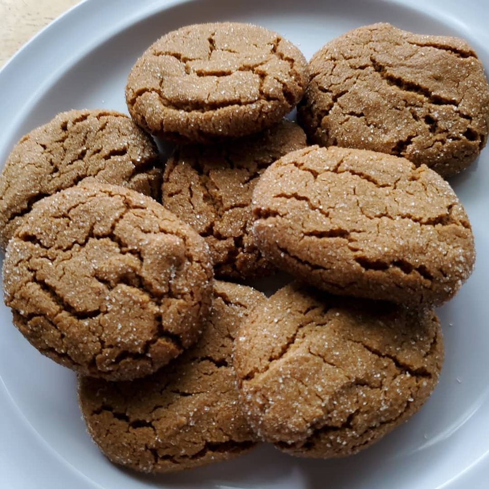

Ginger Snaps

This is an old family recipe for Ginger Snap cookies. They are quite good! I tend to make them as a holiday treat, both to share and to enjoy myself.
Ingredients
- 3/4 cup shortening
- 1 cup packed brown sugar
- 1/4 cup molasses
- 1 egg
- 2 1/4 cups all purpose baking flour
- 2 teaspoons baking soda
- 1/2 teaspoon salt
- 1/2 teaspoon salt
- 1 teaspoon ground ginger
- 1 teaspoon ground cinnamon
- 1/2 teaspoon ground cloves
Instructions
Wet Ingredients
- Cream together wet ingredients until mixture is fluffy
Dry Ingredients
- Sift togther dry ingredients until mixed
Put It All Together!
- Combine the wet and dry mixes until well incorporated. Add dry mix to wet in stages.
- Can use a standing mixer for this
Baking
- Preheat oven to 375 degrees Fahrenheit and line a baking sheet with parchment paper.
- Measure 1 heaping tablespoons of dough and roll into balls. Roll balls in granulated sugar.
- Place 2 inches apart on prepared baking sheet. Bake for 10 to 12 minutes.
- Remove the cookies from the baking sheets and transfer to a wire rack to cool completely.